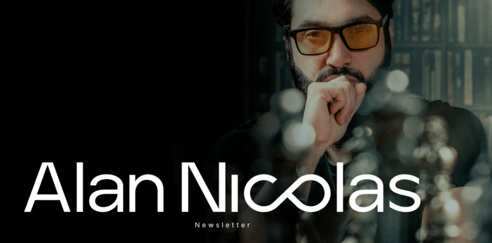

Operative Assessment // CIPHER Protocol
This assessment was built for one operative.
What follows is not a generic English test.
It is an intelligence file — designed to establish precisely where you stand,
how you think, and how you learn.
The results will be used to calibrate your training path
with the precision your level demands.
Four questions. No right answers. This profile shapes how we structure your programme.
What would commanding English unlock for you right now?
How often do you currently use English in real professional situations?
Which part of your English are you most aware of under pressure?
One sentence: what would English at its best let you do that you cannot do now?